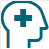

Get Vaccinated and stay up to date on your COVID-19 vaccines
COVID-19 vaccines are effective at preventing you from getting sick. COVID-19 vaccines are highly
effective at preventing severe illness, hospitalizations, and death.
Getting vaccinated is the best way to slow the spread of SARS-CoV-2, the virus that causes COVID-19
Government recommends that everyone who is eligible stay up to date on their COVID-19 vaccines,
including people with weakened immune systems.
Wear a mask
Everyone ages 2 years and older should properly wear a well-fitting mask indoors in public in areas
of substantial or high community transmission, regardless of vaccination status.
You might choose to wear a mask regardless of the level of community transmission, if you or
someone in your household is at increased risk for severe disease or has a weakened immune
system, or if someone in your household is not up to date on their COVID-19 vaccines or not
eligible to receive COVID-19 vaccines.
Improve how well your mask protects you, and learn about how to choose a mask to protect yourself
and others.
People who have a condition or are taking medications that weaken their immune system may not be
fully protected even if they are up to date on their COVID-19 vaccines. They should continue to take
all precautions recommended for unvaccinated people, including properly wearing a well-fitted mask,
until advised otherwise by their healthcare provider.
Stay 6 feet away from others
Inside your home: Avoid close contact with people who are sick, if possible. If possible, maintain 6
feet between the person who is sick and other household members. If you are taking care of someone
who is sick, make sure you properly wear a well-fitting mask and follow other steps to protect
yourself.
Indoors in public: If you are not up to date on COVID-19 vaccines, stay at least 6 feet away from
other people, especially if you are at higher risk of getting very sick with COVID-19.
Test to prevent spread to others
Tests for SARS-CoV-2(the virus that causes COVID-19) tell you if you have an infection at the time
of the test. This type of test is called a viral test because it looks for viral infection.
Regardless of the test type you select, a positive test result means that you have an infection and
should isolate and inform your close contacts to avoid spreading disease to others.
COVID-19 self-tests are one of many risk-reduction measures, along with vaccination, masking, and
physical distancing, that protect you and others by reducing the chances of spreading COVID-19.
Wash your hands often
Wash your hands often with soap and water for at least 20 seconds especially after you have been in
a public place, or after blowing your nose, coughing, or sneezing.
If soap and water are not readily available, use a hand sanitizer that contains at least 60%
alcohol. Cover all surfaces of your hands and rub them together until they feel dry.
Avoid touching your eyes, nose, and mouth with unwashed hands.
Clean and disinfect
Clean high touch surfaces regularly or as needed and after you have visitors in your home. This
includes tables, doorknobs, light switches, countertops, handles, desks, phones, keyboards, toilets,
faucets, and sinks.
If someone is sick or has tested positive for COVID-19, disinfect frequently touched surfaces.
If surfaces are dirty, clean them using detergent or soap and water prior to disinfection.
 Monitor your health daily
Be alert for symptoms:
Watch for fever, cough, shortness of breath, or other symptoms of COVID-19.
Take your temperature if symptoms develop.
Monitoring symptoms is especially important if you are running errands, going into the office or
workplace, and in settings where it may be difficult to keep a physical distance of 6 feet.